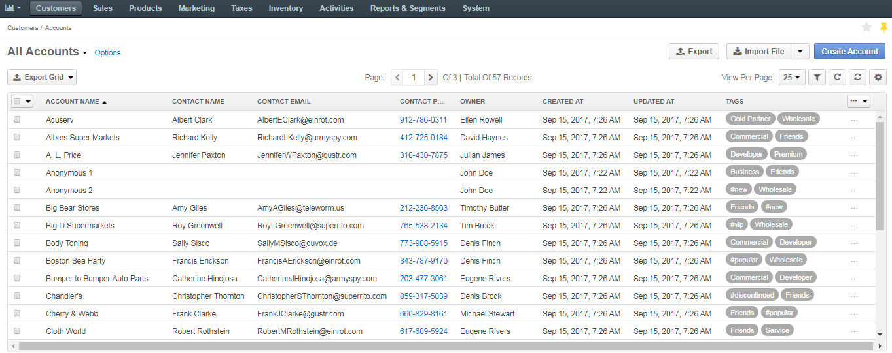

With mass actions, you can apply one action to multiple items at the same time, which can simplify and speed up the process of selecting the required items.
In the management console, mass actions are available for tables where information is displayed as a list.
As an illustration, you can have a look at how mass actions work for accounts:
Navigate to Customers > Accounts in the main menu.
The following page opens:
To select multiple accounts, click in the left corner of the list header.
Hover over the More Options menu at the end of the list header to perform one of the following actions: